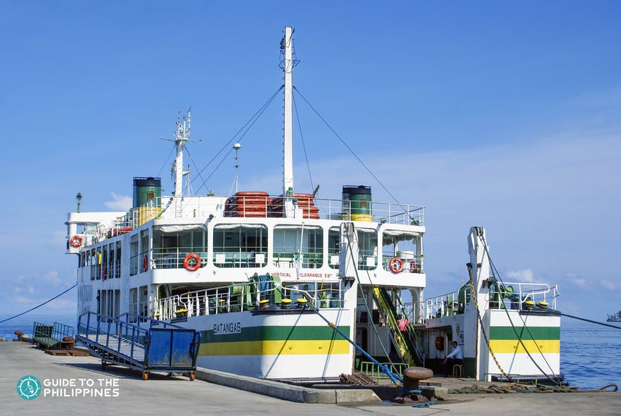

If it's your first time in Bohol, you might want to focus on the more popular attractions. The packaged countryside and Panglao Island tours are the most popular because they highlight the most breathtaking landscapes in the province. Most visitors spend at least three days, two nights to visit Bohol. But you can extend it up to 5 days. Here’s a sample itinerary that you can take inspiration from:
Sample Itinerary
Day 1: Arrival + Tour
- 08:00 am - Arrival at Tagbilaran Airport
- 08:30 am - Check-in at hotel
- 09:00 am - Start of Countryside Tour: Tagbilaran, Baclayon, Albur
- 11:30 am - Loboc River Cruise with lunch
- 01:30 pm - Try fun activities at Chocolate Hills Adventure Park
- 06:00 pm - Dinner at Tarsier Paprika
Day 2: Island-Hopping Tour + Firefly Watching
- 05:30 am - Depart for the islands
- 06:00 am - Island-hopping: Pamilacan Island, Virgin Island, and Balicasag Island
- 04:00 pm - Back at the resort or lounge by Alona Beach
- 05:30 pm - Firefly watching tour
- 08:30 pm - Dinner and drinks at Shaka Bohol
Day 3: Panglao Island
- 06:00 am - Inland tour of Panglao Island
- 10:00 am - Early lunch at Bohol Bee Farm
- 11:00 nn - Explore Anda Beach
- 06:00 pm - Back at the resort in Panglao Island
- 08:00 pm - Dinner at Alona Beach
Day 4: Danao Adventure Park
- 05:00 am - Early breakfast/li>
- 06:00 am - Danao Adventure Park Tour
- 04:00 pm - Back to the Hotel to Freshen up
- 06:00 pm - Dinner at Gerarda’s in Tagbilaran
Day 5: Alona Beach + Departure
- 07:00 am - Breakfast at Buzz Cafe
- 09:00 am - Try water activities at Alona Beach:
- 12:00 nn - Check-out of hotel
- 02:00 pm - Flight
Best Time To Go There

If you are going to Bohol for sightseeing and water activities, it's essential to take note of the climate, weather, and temperature before booking your plane tickets. In this section, you'll be able to know the best time of the year to visit Bohol.
Like most regions in the Philippines, the temperature in Bohol varies so little throughout the year. Bohol is hot all year-round. However, the chances of rainfall fluctuate throughout the year.
So you will want to take note and avoid the months with high chances of precipitation, especially if you’re going to make the most out of the beaches and the water activities in Bohol. Additionally, knowing when peak seasons are will help you gauge the amount of crowd you can expect in Bohol tourist spots.
Dry and Summer Season | December to May

The dry season in Bohol starts in December and ends in May, with April having the least chance of rainfall. Understandably, these months are the peak season; they are the ideal time to visit Bohol for hot-weather activities such as swimming, diving, snorkeling, and sightseeing.
Summer is also the best time to see the Chocolate Hills in their iconic chocolate brown color. Naturally, most travelers prefer visiting Bohol during these months. Which means you can expect to see crowds at Bohol beaches and attractions.
Holy Week | March to April
The Holy Week falls within the best time range to visit Bohol in terms of weather. Thus, many local visitors flock Bohol's beaches during the months of March to April.
Aside from the warm sunny weather, the Holy Week is considered a holiday in the Philippines. You can expect large crowds during this time, a great opportunity to meet and mingle with locals.
If you want to experience the Bohol during the Holy Week, plan a trip from March to April. If you prefer less crowd while still making the best out of the dry season, you can plan your trip in January, February, and May.
Sandugo Festival | July
Every year, Bohol celebrates the Sandugo Festival in Tagbilaran City. The festival commemorates the historic blood compact (Sandugo) between Datu Sikatuna of Bohol and Spanish Conquistador, Miguel Lopez de Legazpi. It is a month-long festival that involves beauty pageants and street dancing competitions.
If you plan to visit during this time, you will be treated to an immersive cultural experience. As with other Philippine festivals, you can expect the celebration to be vibrant and extravagant. Expect crowded streets and heavy traffic around Tagbilaran City during this festival.
Climate and Weather
The temperature in Bohol varies very little throughout the year. However, Bohol experiences significant variations in monthly rainfall. The wet season starts from June to November, with June and October receiving the most rain. Whereas, the dry season in Bohol begins in January and ends on May 30, with April having the least chance of rainfall.
To witness the Chocolate Hills in their iconic chocolate brown color, you’ll want to come during the dry months of January through May. Understandably, these months are the peak season, so be ready to compete with the Holy Week crowd.
How to Get There?
Bohol is the prime tourist destination for local and foreign travelers. It is accessible from major cities of Luzon, Visayas, and Mindanao. Luzon, Visayas, and Mindanao are the primary island groups of the Philippine archipelago.
Major jump-offs in Luzon include the Ninoy Aquino International Airport in Manila, and Clark International Airport in Angeles City, Pampanga. On the other hand, Davao International Airport in Davao City is the primary jump-off in Mindanao.
Aside from air travel, you also have the option to travel by sea. You can reach Bohol via fast craft from Cebu, Dumaguete, Siquijor, and Camiguin.
By Flights
The Bohol-Panglao International Airport services the whole Bohol Province. This airport opened last November 2018. It replaced the old airport that used to be in Tagbilaran City, the capital of Bohol Province.
Bohol-Panglao Airport is dubbed as the “Green Gateway to the World” and the first “Eco-airport in the Philippines” because of its environment-friendly equipment and facilities.
Hence, you might want to book your accommodations in Panglao island itself or start your Bohol adventure in the tourist spots in Panglao for your convenience. If you booked a hotel in Tagbilaran, there is a regular air-conditioned bus from the airport to Island City Mall in Tagbilaran City.
At the moment, Bohol is only connected to domestic destinations. If you are coming from outside of the Philippines, you will have to fly to Luzon or Mindanao to catch a plane to Bohol.
From Luzon or Mindanao in the Philippines to Bohol
Traveling by air is the most convenient and hassle-free way to reach Bohol. If you’re coming from Luzon, you can fly directly from Ninoy Aquino International Airport (NAIA) in Manila to the Bohol-Panglao International Airport.
It will take you approximately an hour and a half. Philippine Airlines, Cebu Pacific, and Air Asia have daily flights from Manila to Bohol.
It will take you approximately an hour and a half. Philippine Airlines, Cebu Pacific, and Air Asia have daily flights from Manila to Bohol.
From Outside of the Philippines to Bohol
As mentioned, Bohol is currently only connected to domestic destinations. If you’re coming from outside of the Philippines, you will have to fly to Manila Ninoy Aquino International Airport (NAIA) Airport.
NAIA is connected to several international destinations in North East and Southeast Asia, Middle East, Oceania, North America, and Europe. From the Manila Ninoy Aquino International Airport, you can fly directly to the New Bohol International Airport in Panglao Island, Bohol.
By Ferry

Another way to reach Bohol is by traveling by sea. While this route may take longer, you will get to experience a different kind of adventure. Several ferries can take you to Bohol from Cebu, Dumaguete, Siquijor, Cagayan de Oro, and Camiguin.
OceanJet, Trans-Asia Shipping Lines, and Super Shuttle Ferry are the leading ferry companies that travel to Bohol from various locations in Visayas and Mindanao.
OceanJet has daily trips to Bohol from Cebu, Dumaguete, and Siquijor. Trans-Asia Shipping Lines, Cokaliong Shipping Lines, and Lite Ferries have weekly trips to Bohol from Cagayan de Oro in Mindanao. Super Shuttle Ferry also has daily trips from Camiguin to Bohol.
From Cebu by Ferry
If you’ll be coming from Cebu, the fastest way to reach Bohol is via fast craft. You will reach Tagbilaran Port after two hours. OceanJet has several trips from Bohol to Cebu every day.
You can also take the slow ferry to get to Tagbilaran. Lite Ferries have daily trips to Tagbilaran. While a slow ferry is cheaper than the fast craft, it will take you four hours to reach Bohol.
There are five major passenger ports in Cebu; Pier 1, 2, 3, 4, and 5. Take note that OceanJet and Lite Ferries operate at Pier 1. You can purchase your tickets at the ferry terminal, but it is more advisable to buy them in advance.
From Dumaguete by Ferry
If you're coming from Dumaguete City, you can travel to Bohol by fast ferry. The trip to Bohol from Dumaguete will only take two hours. There are limited options when you're going to Bohol from Dumaguete.
OceanJet has two visits to Tagbilaran every day. If you're traveling during peak season, be sure to book your tickets in advance as they usually sell out quickly.